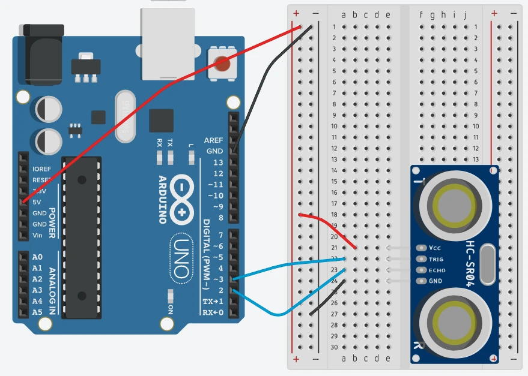
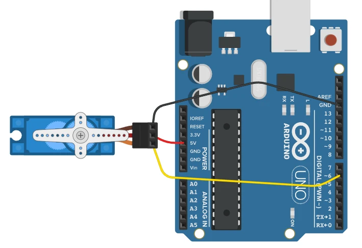

Você já fez o Arduino ler sensores, controlar saídas e movimentar um servo. Agora o desafio é outro: transformar leituras em informação útil, criar movimentos calculados, produzir mensagens compreensíveis e testar o programa com diferentes entradas.
Medir
→
Calcular
→
Comunicar
→
Testar
Sem recomeçarOs circuitos principais já são conhecidos e serão reaproveitados.
AmbienteArduino Uno e Tinkercad continuam sendo a base das práticas deste bloco.
ObjetivoUsar funções quando elas resolvem uma necessidade real do sistema.
5.1
Quando só a distância não basta
Funções matemáticas ajudam a transformar uma leitura isolada em informação útil para acompanhar o comportamento do sistema.
Circuito reutilizado

Reutilize o circuito do sensor de distância já estudado: HC-SR04 com TRIG no D3 e ECHO no D2. Não há nova montagem nesta etapa.
1. Situação
Durante o teste de um sistema de aproximação, definimos 30 cm como distância de referência. O HC-SR04 informa a distância atual, mas queremos responder a três perguntas: quanto a leitura se afastou da referência, qual foi a menor distância observada e qual foi a maior?
Essas informações permitem analisar o teste sem anotar manualmente cada leitura.
2. O que já sabemos
O HC-SR04 envia um pulso pelo TRIG, recebe o eco pelo ECHO e permite calcular a distância. O Monitor Serial já pode mostrar o valor medido.
3. O que precisamos agora
Precisamos comparar valores sem escrever toda a lógica matemática manualmente. É aí que entram funções prontas que devolvem um resultado.
4. Três funções úteis neste teste
abs(valor)
Retorna o valor absoluto. Aqui mostra o tamanho da diferença para 30 cm sem importar se o objeto está antes ou depois da referência.
min(a, b)
Retorna o menor dos dois valores. Usaremos para guardar a menor distância encontrada desde o início do teste.
max(a, b)
Retorna o maior dos dois valores. Usaremos para guardar a maior distância encontrada.
5. Código completo
const int pinoTrig = 3;
const int pinoEcho = 2;
const int referencia = 30;
int menorDistancia = 400;
int maiorDistancia = 0;
int medirDistancia() {
digitalWrite(pinoTrig, LOW);
delayMicroseconds(2);
digitalWrite(pinoTrig, HIGH);
delayMicroseconds(10);
digitalWrite(pinoTrig, LOW);
long duracao = pulseIn(pinoEcho, HIGH);
return duracao / 58;
}
void setup() {
pinMode(pinoTrig, OUTPUT);
pinMode(pinoEcho, INPUT);
Serial.begin(9600);
}
void loop() {
int distancia = medirDistancia();
int diferenca = abs(distancia - referencia);
menorDistancia = min(menorDistancia, distancia);
maiorDistancia = max(maiorDistancia, distancia);
Serial.print("Distancia: ");
Serial.print(distancia);
Serial.print(" cm | Diferenca para 30 cm: ");
Serial.print(diferenca);
Serial.print(" cm | Menor: ");
Serial.print(menorDistancia);
Serial.print(" cm | Maior: ");
Serial.print(maiorDistancia);
Serial.println(" cm");
delay(500);
}
6. Entendendo as novidades
abs(distancia - referencia) transforma uma diferença que poderia ser negativa em uma medida de afastamento sempre positiva.
min(menorDistancia, distancia) compara a menor leitura já guardada com a leitura atual e mantém a menor.
max(maiorDistancia, distancia) faz o mesmo para a maior leitura.
Os valores de mínimo e máximo permanecem acumulados enquanto o programa estiver executando. Reiniciar a simulação inicia um novo teste.
7. Testando
Inicie a simulação e abra o Monitor Serial em 9600.
Altere a distância do objeto no HC-SR04.
Passe por valores menores e maiores que 30 cm.
Observe a diferença, o menor valor e o maior valor registrados.
8. Resultado esperado
Se a leitura for 18 cm, a diferença para a referência de 30 cm será 12 cm. Se depois a leitura passar para 45 cm, a diferença será 15 cm. O programa também continuará lembrando os extremos observados.
9. Erros comuns
Problema
O que conferir
A distância não varia
Confira a simulação do HC-SR04 e as ligações TRIG/ECHO.
O mínimo parece não aumentar
Isso é esperado: ele guarda a menor leitura já observada até reiniciar o teste.
A diferença fica sempre positiva
Também é esperado: essa é justamente a finalidade de abs() neste problema.
10. O que foi aplicado
Funções matemáticas abs(), min() e max()
Reutilização de leitura do HC-SR04
Transformação de dados brutos em informação de acompanhamento
Uso do Monitor Serial para observar o teste
5.2
Um movimento que não pareça feito aos saltos
Uma função trigonométrica pode gerar um comportamento periódico e suave que se torna visível no próprio hardware.
Circuito reutilizado

Reutilize o circuito do Servo Motor já estudado: sinal no D6, alimentação em 5V e GND. A novidade será somente a forma de calcular as posições.
1. Situação
Imagine um pequeno mecanismo que precisa fazer um movimento contínuo de um lado para o outro. Mandar o servo diretamente para 30°, depois 90° e depois 150° produz mudanças em etapas. Queremos gerar uma sequência de posições que aumente, diminua e se repita suavemente, sem escrever centenas de ângulos à mão.
2. O que já sabemos
O projeto anterior de Servo já ensinou a biblioteca Servo, o comando attach() e o envio de posições com write(). Não vamos ensinar biblioteca novamente.
3. Por que trigonometria aparece aqui
Seno e cosseno produzem valores que variam periodicamente. Isso permite transformar uma sequência matemática em movimento, sinal ou outra grandeza que sobe e desce de forma repetitiva.
4. Funções trigonométricas no Arduino
sin(x)
Calcula o seno. Seus valores variam entre -1 e 1 e serão usados para controlar o movimento deste projeto.
cos(x)
Calcula o cosseno. Também varia periodicamente entre -1 e 1, mas começa o ciclo em outra posição.
tan(x)
Calcula a tangente. Pode crescer muito perto de certos ângulos e, por isso, não é adequada para limitar diretamente a posição deste servo.
Atenção:sin(), cos() e tan() recebem o ângulo em radianos. Por isso converteremos graus usando graus * PI / 180.0.
sin(radianos) gera valores entre aproximadamente -1 e 1 ao longo do ciclo.
90 + valorSeno * 60 transforma essa faixa em posições aproximadas entre 30° e 150° para o servo.
O for percorre um ciclo de 0° a 360° da função matemática. Ele não representa diretamente o ângulo físico do servo; quem define a posição física é anguloServo.
7. Testando
Inicie a simulação.
Observe o servo completar um ciclo contínuo de ida e volta.
Troque 60 por 30 e compare a amplitude do movimento.
Volte para 60 antes de seguir.
8. Resultado esperado
O eixo deverá oscilar aproximadamente entre 30° e 150°, passando pela região de 90° durante o ciclo. A posição muda em pequenos passos calculados, em vez de usar uma lista fixa de ângulos.
9. Erros comuns
Problema
O que conferir
O servo não se move
Confira sinal no D6, 5V, GND, #include <Servo.h> e attach().
Os valores de seno parecem errados em outro teste
Verifique se o ângulo foi convertido de graus para radianos.
O servo tenta ultrapassar sua faixa
Não aumente a amplitude sem calcular antes os limites de posição.
10. O que foi aplicado
Funções trigonométricas sin(), cos() e tan() em seu papel correto
Conversão de graus para radianos
Uso prático de sin() para gerar movimento periódico
Reutilização do Servo e de sua biblioteca sem repetir conteúdo já aprendido
5.3
O sistema precisa explicar o que está acontecendo
Uma leitura numérica é útil para a máquina; uma mensagem organizada é muito mais útil para quem acompanha o sistema.
Mesmo circuito, nova finalidade
O circuito continua exatamente o mesmo da etapa 5.1. Agora o trabalho está na forma de organizar e comunicar a informação.
1. Situação
No Monitor Serial, ver apenas 18 obriga a pessoa a lembrar o que esse número significa e se ele exige atenção. Queremos que o próprio programa produza algo como DISTANCIA: 18 cm | ESTADO: MUITO PROXIMO.
Além de facilitar o acompanhamento agora, essa mensagem já prepara uma ideia importante para o próximo bloco: informações que poderão ser enviadas a outro dispositivo.
2. O que já sabemos
Já sabemos medir a distância e usar condições para tomar decisões. Também sabemos mostrar valores com Serial.print().
3. O que precisamos agora
Precisamos criar textos, juntar texto com números e medir o tamanho da mensagem produzida. Para isso usaremos o tipo String e funções associadas a ele.
4. Recursos de texto usados
String(valor)
Converte um valor numérico para texto, permitindo incluí-lo em uma mensagem.
+
Quando trabalhamos com String, permite concatenar partes e formar uma mensagem maior.
.length()
Informa quantos caracteres a mensagem possui. Isso permite conhecer o tamanho do texto que estamos produzindo.
5. Código completo
const int pinoTrig = 3;
const int pinoEcho = 2;
int medirDistancia() {
digitalWrite(pinoTrig, LOW);
delayMicroseconds(2);
digitalWrite(pinoTrig, HIGH);
delayMicroseconds(10);
digitalWrite(pinoTrig, LOW);
long duracao = pulseIn(pinoEcho, HIGH);
return duracao / 58;
}
String classificarDistancia(int distancia) {
if (distancia <= 15) {
return "MUITO PROXIMO";
}
if (distancia <= 40) {
return "PROXIMO";
}
return "AREA LIVRE";
}
void setup() {
pinMode(pinoTrig, OUTPUT);
pinMode(pinoEcho, INPUT);
Serial.begin(9600);
}
void loop() {
int distancia = medirDistancia();
String estado = classificarDistancia(distancia);
String mensagem = "DISTANCIA: " + String(distancia)
+ " cm | ESTADO: " + estado;
Serial.println(mensagem);
Serial.print("Caracteres da mensagem: ");
Serial.println(mensagem.length());
delay(500);
}
6. Entendendo as novidades
String classificarDistancia(...) cria uma função que devolve texto de acordo com a leitura.
String(distancia) converte o número medido para que ele possa fazer parte da mensagem.
O operador + junta as partes do texto.
mensagem.length() informa a quantidade de caracteres da mensagem final.
7. Testando
Abra o Monitor Serial.
Teste uma distância de até 15 cm.
Teste uma distância entre 16 e 40 cm.
Teste uma distância acima de 40 cm.
Observe como o texto e seu tamanho mudam.
8. Resultado esperado
Em vez de receber apenas números, a pessoa passa a enxergar uma leitura com unidade e estado. O sistema começa a separar dado de informação compreensível.
9. Erros comuns
Problema
O que conferir
Erro ao montar a mensagem
Confira a conversão String(distancia) e os sinais de +.
Estado diferente do esperado
Confira a ordem e os limites das condições: até 15, até 40 e acima de 40.
O número de caracteres muda
Isso é normal: valores com mais dígitos e estados com tamanhos diferentes alteram o comprimento da mensagem.
10. O que foi aplicado
Criação e conversão de textos com String
Concatenação de texto e valores
Uso de length()
Transformação de leitura numérica em mensagem de estado
5.4
Como testar situações que não estão acontecendo agora?
Números pseudoaleatórios podem funcionar como entradas de teste quando queremos verificar rapidamente vários comportamentos do programa.
1. Situação
Para conferir a classificação de distância, podemos mover o objeto repetidamente no simulador. Mas, antes de evoluir o sistema, queremos executar muitos testes de lógica sem depender de uma posição física específica do sensor a cada vez.
Nesta etapa, o circuito deixa de ser necessário: o próprio programa fornecerá leituras simuladas para verificar as decisões.
2. Por que não há imagem de circuito
Não existe uma nova montagem para executar. Inserir um desenho ou uma imagem decorativa não ajudaria a realizar a prática. Basta um Arduino no Tinkercad e o Monitor Serial.
3. O novo recurso
random(minimo, maximo) gera números pseudoaleatórios. O limite mínimo pode aparecer; o limite máximo fica de fora.
Assim, random(5, 81) pode gerar valores de 5 até 80.
4. Código completo
void setup() {
Serial.begin(9600);
}
void loop() {
int distanciaTeste = random(5, 81);
String estado;
if (distanciaTeste <= 15) {
estado = "MUITO PROXIMO";
} else if (distanciaTeste <= 40) {
estado = "PROXIMO";
} else {
estado = "AREA LIVRE";
}
Serial.print("Distancia simulada: ");
Serial.print(distanciaTeste);
Serial.print(" cm | Estado: ");
Serial.println(estado);
delay(700);
}
5. Entendendo as novidades
random(5, 81) fornece uma entrada de teste entre 5 e 80 cm.
A lógica de classificação é a mesma que seria usada com uma distância recebida do sensor. Isso permite testar o programa separadamente da montagem física.
Os valores são pseudoaleatórios: são produzidos por um algoritmo. Neste laboratório, isso é suficiente porque o objetivo não é segurança nem sorteio real; é exercitar diferentes faixas de entrada.
6. Testando
Crie um circuito novo no Tinkercad apenas com o Arduino Uno.
Cole o código e inicie a simulação.
Abra o Monitor Serial em 9600.
Observe se aparecem casos das três faixas.
Confira se cada valor recebe o estado correto.
7. Resultado esperado
O Monitor Serial exibirá diferentes distâncias simuladas e classificará cada uma. O foco não é prever qual número virá, mas confirmar se a regra responde corretamente a diferentes entradas.
8. Erros comuns
Problema
O que conferir
Esperar o valor 81
O segundo argumento de random() não entra na faixa gerada.
Usar random() como se fosse um sensor real
Aqui ele serve apenas para teste de software. No sistema real, a entrada volta a vir do sensor.
Achar que pseudoaleatório significa imprevisível para qualquer finalidade
Não. Este recurso não deve ser confundido com geração adequada para segurança ou criptografia.
9. O que foi aplicado
Geração de números pseudoaleatórios com random()
Uso correto dos limites mínimo e máximo
Simulação de entradas para teste de lógica
Reutilização das regras de classificação trabalhadas anteriormente
10. Próximo problema
Até aqui, o sistema mede, calcula, organiza informações e pode testar sua própria lógica. Mas tudo continua acontecendo no Arduino e no computador ligado a ele. Como acompanhar ou controlar esse sistema a partir de outro dispositivo?
Essa necessidade abre o próximo bloco: Conectividade.